El desarrollo de este proyecto se llevó a cabo en distintas etapas, cada una de ellas clave para la construcción del sistema de tiro al blanco que presentamos. La primer etapa fue la recolección de materiales. Para crear el tablero de dardos y el sistema de detección, seleccionamos materiales accesibles como el telgopor y papel de aluminio para el tablero, además de componentes electrónicos como cables, resistencias y un arduino. Este proceso fue esencial para asegurarnos de que todos los elementos necesarios estuvieran disponibles y fueran compatibles con el diseño que habíamos planeado.
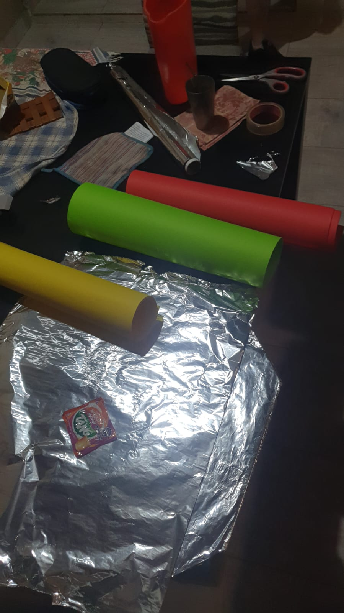 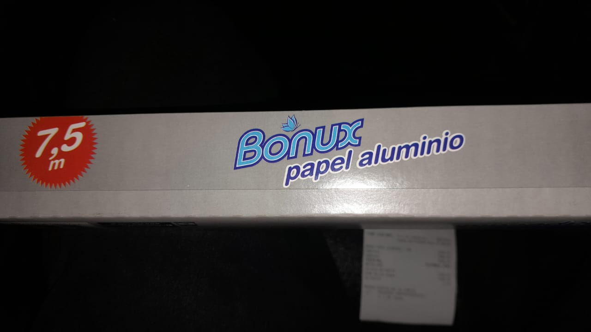 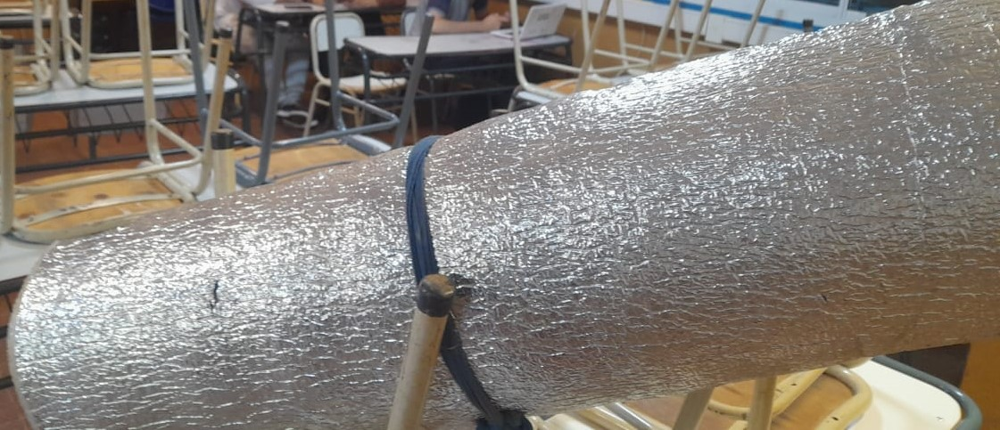 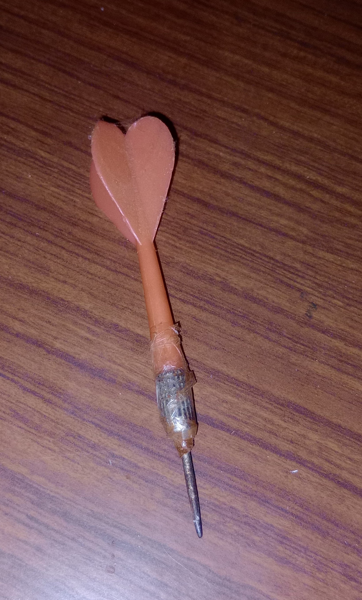Luego pasamos a la etapa de pruebas electrónicas. Comenzamos con ejercicios básicos de programación y montaje utilizando el Arduino. Por ejemplo, realizamos pruebas para encender y apagar un LED, con diferentes patrones, lo que nos permitió familiarizarnos con la plataforma y validar los principios de funcionamiento de nuestro circuito. Estas pruebas iniciales nos ayudaron a asegurar que la lógica detrás del registro de los impactos de los dardos funcionara correctamente y que el sistema pudiera responder a la entrada de señales eléctricas en tiempo real. Cada una de estas fases de desarrollo está documentada con imágenes que muestran nuestro progreso y las soluciones que encontramos a lo largo del camino.
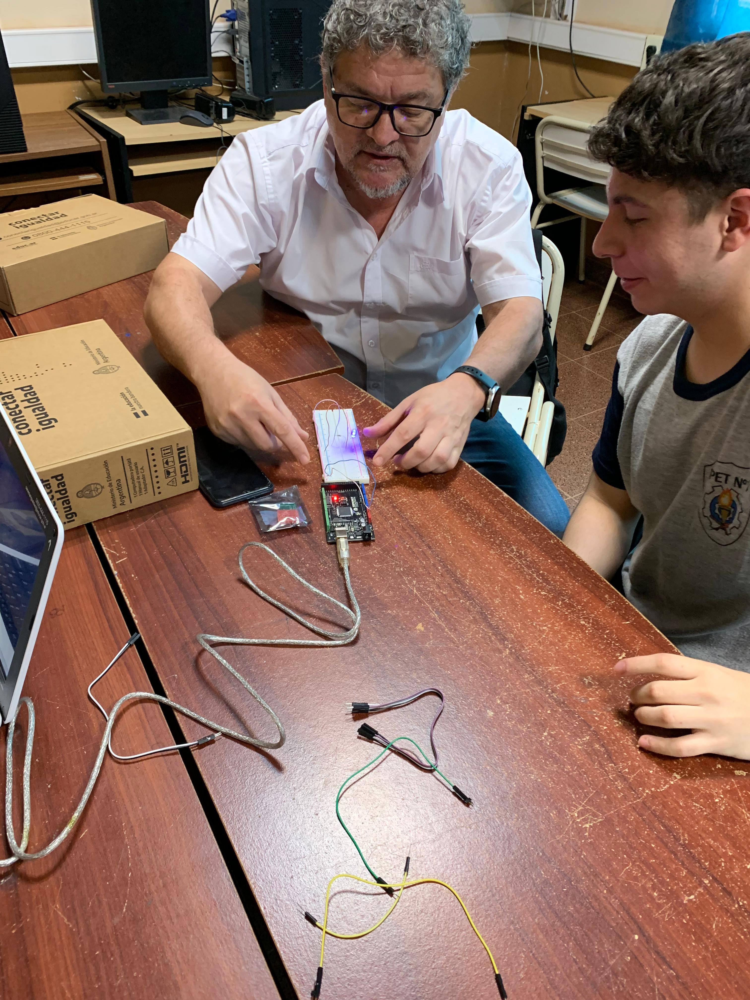 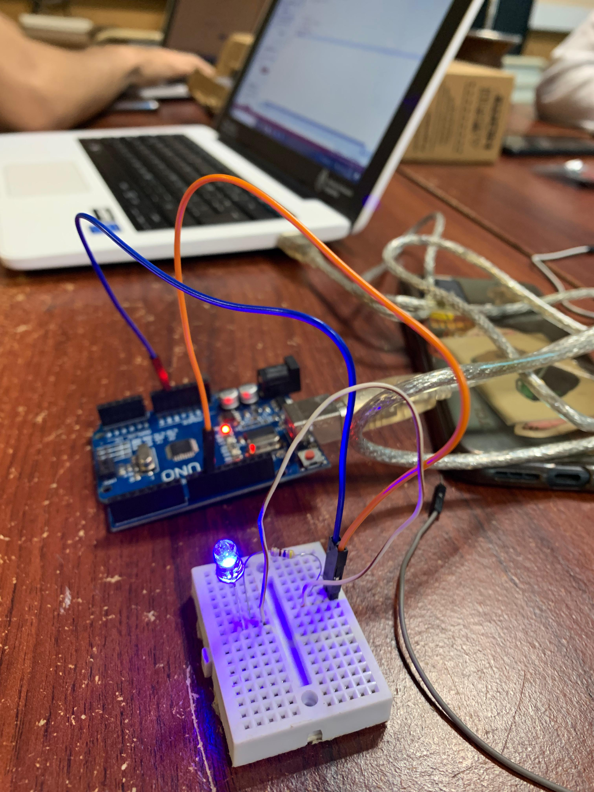 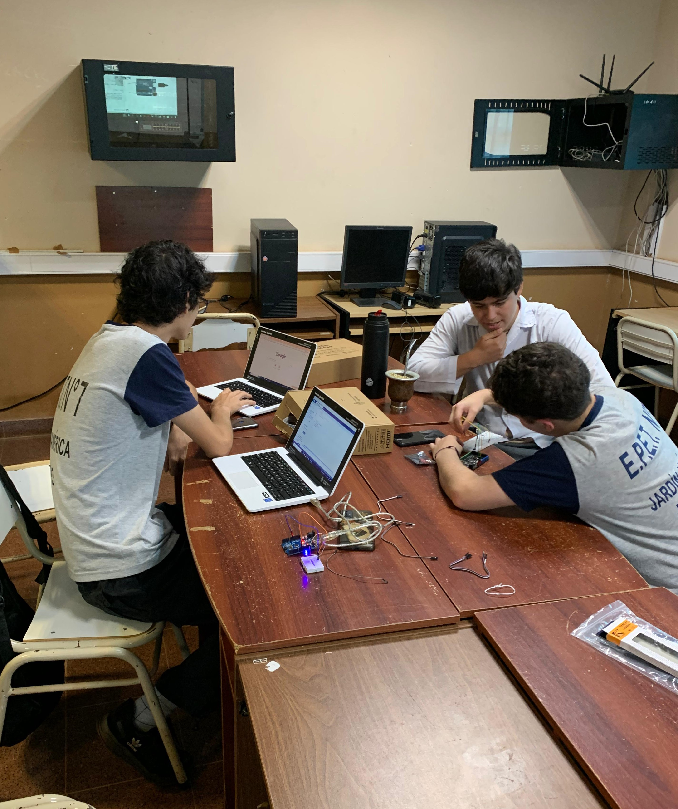Luego pasamos a la construcción del tablero con telgopor y lo recubrimos con el papel aluminio, delimitando también las áreas de puntaje con papeles de colores. Al mismo tiempo, desarrollamos la interfaz de la aplicación móvil y realizamos pruebas de lanzamiento para ajustar el sistema.
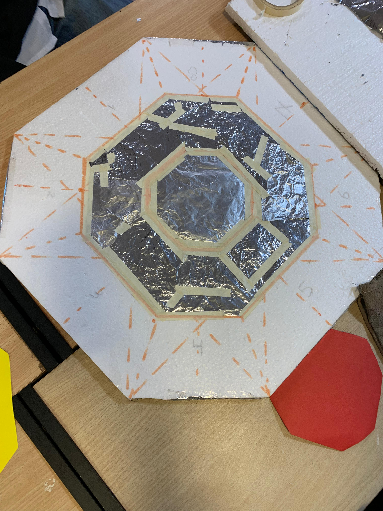 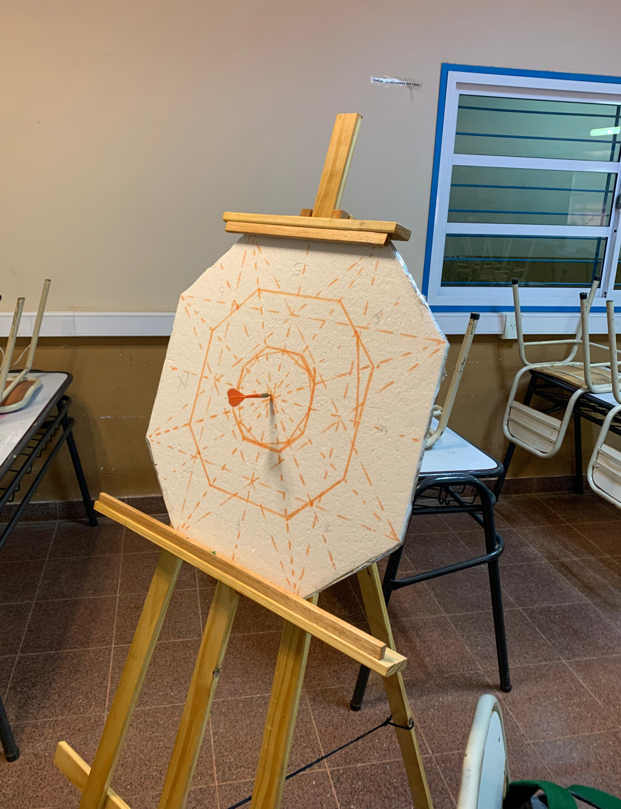 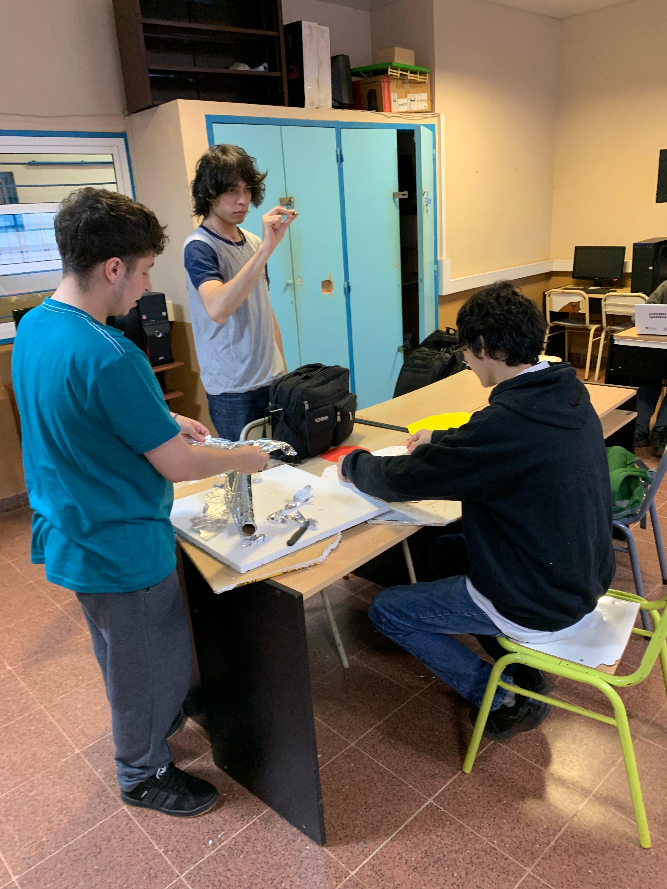 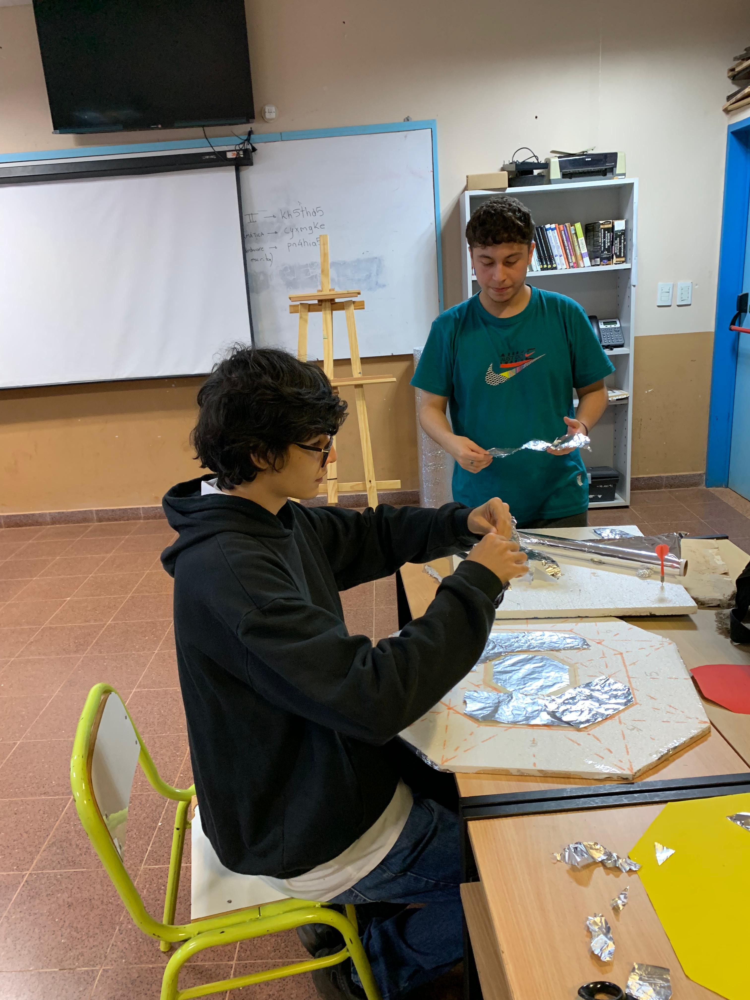 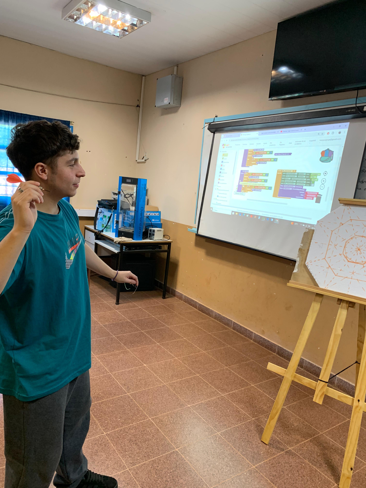 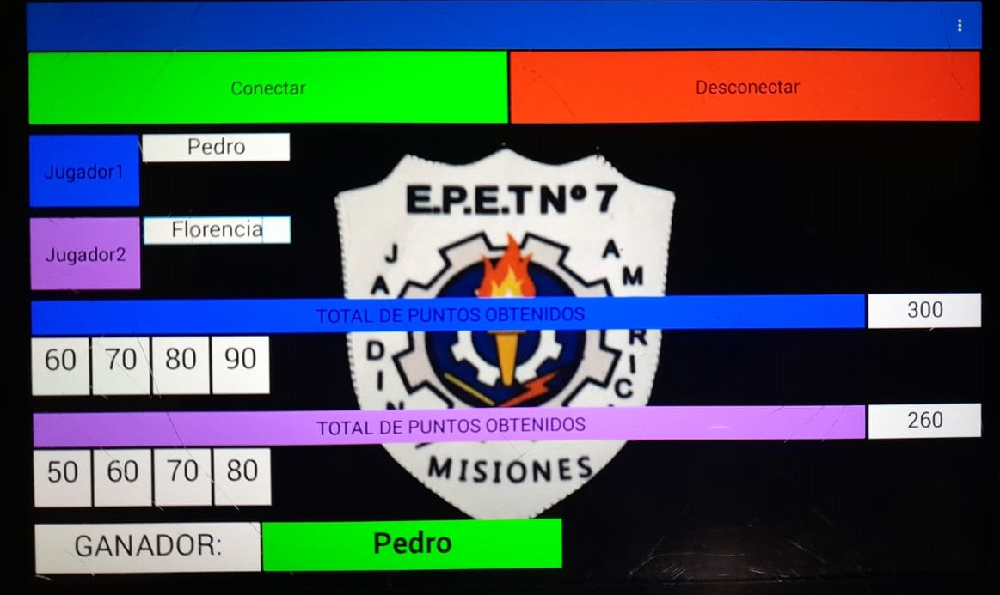